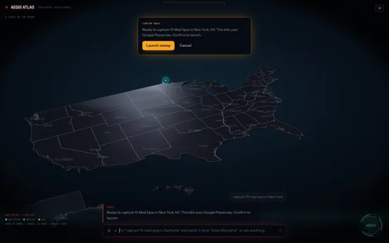
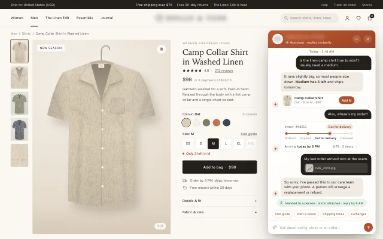
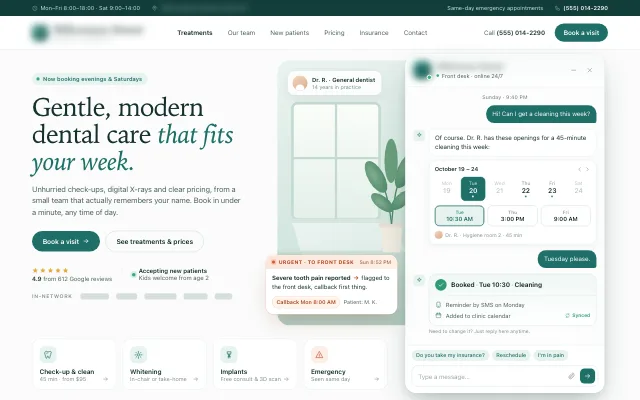
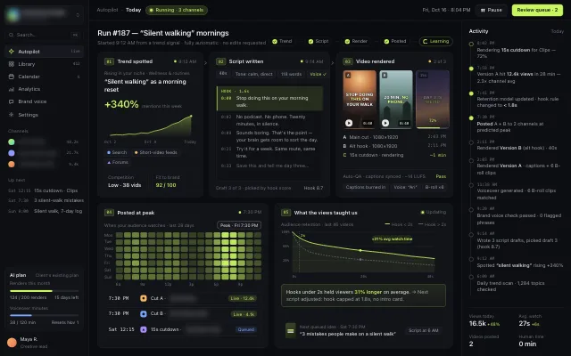

AI implementation
AI that does a real job. Try it.
Six assistants from builds I’ve made. Ask one something and watch what it checks in the business’s data, which rule it follows, what it costs, and when it hands you to a person.
- Runs on your Claude or Codex plan
- A person approves what matters
- A monthly cap you choose
- It says when it doesn’t know
- A person takes over when it’s off
How every build thinks
The same loop behind every reply.
What you saw in the panel isn’t decoration. Each reply runs through these steps, in this order, and leaves a trail you can check.
- Understand
What the message means: the question, the order number, the tone.
Damaged item · tone: upset - Check
Look it up in your real data: stock, calendar, price list, CRM.
Calendar · Tue 10:30 open - Follow your rules
The lines you draw: what it may do alone and what it never does.
Severe pain → front desk - Guard
The limits that keep it safe: no guessing, no advice it isn’t qualified to give.
No made-up discounts - Act or draft
Book, add to cart, score, follow up. Or draft it and wait.
Booked · reminder Mon - Hand to a person
Refunds, offers, urgent cases and anything unclear go to your team.
Ticket #2291 · reply by 9 AM
Built so it can’t embarrass you
The rules come before the answers.
Six lines every build holds. Each one is live in the demos above: press Try it and watch the logic panel catch it.
-
Guard
It won’t guess
When a question doesn’t match what it knows, it says so and passes it to a person, instead of making something up.
What’s the weather like today?
I’m not sure about that one, and I’d rather not guess. I’ve sent it to the team.
GuardDon’t guess · unclear questions go to a person
-
Guard
It stays in its lane
No medical, legal or money advice. No discounts or prices it wasn’t given. No describing neighbourhoods by who lives there.
Should I take antibiotics? I have some left.
I can’t give medical advice, that’s Dr. R’s call. I’ve asked the team to phone you tomorrow morning.
GuardNo medical advice · dentist notified
-
Person
A person approves what matters
The AI drafts. Nothing reaches a prospect until someone has read it and pressed send.
Draft the outreach for them.
Here’s the draft. It names one thing they can check themselves and asks for 15 minutes. Waiting for you
GuardHuman gate · nothing sends without your approval
-
Guard
A limit you choose
A monthly cap on pay-as-you-go, or your Claude or Codex plan’s own limit. When it’s reached, the AI pauses and messages go to your team, so nothing is lost.
Where’s my order? It’s #48213.
Assistant paused · a person will reply here by 9 AM
GuardMonthly cap reached · $40 of $40 → AI paused
-
Rule
Honest with people
Opt-outs are honoured the moment someone asks. Order details are shared only with the person who placed the order.
Stop texting me.
Understood, you won’t get any more texts from us.
GuardHonoured instantly · logged, follow-ups cancelled
-
Checked
Tested before it ships
1,231 automated tests run on AegisLeadOS before every change goes out. The demos on this page are checked against 422 real-world messages, typos included.
is it true to szie?
It runs about half a size big, so most people size down.
UnderstoodMatched “size” despite the typo
Pay for AI your way
Already paying for Claude or Codex? Use it.
You don’t need a new AI bill. Flip the switch under any demo’s logic panel to see the difference.
-
No new AI bill
Your Claude or Codex plan
The build runs on the subscription you already have: Claude Pro or Max, or a ChatGPT plan with Codex. Each reply costs nothing extra. When the plan’s limit is reached, a person takes over until it resets.
Content studio · runs this way today -
Cents per reply
Pay-as-you-go, with a cap
Billed by use, with a monthly limit you set. A typical reply costs under a cent. Reach the cap and the AI pauses, messages go to your team.
Store · clinic · real estate · home services -
Your account, your bill
Your own keys
Plug in your own API keys, like the Google Places key AegisLeadOS uses for lead sweeps. Usage lands on your account, and the AI confirms before anything is billed.
AegisLeadOS · confirms before each sweep
From the builds
The same assistants, in the client’s own product.
Client names are blurred.

AegisLeadOS · Lead captureOne typed order finds and scores local businesses.
Online store · Store assistantSizing, stock, orders, and damage cases to a person.
Dental clinic · Front deskBooks open slots and flags urgent pain to the desk. Real estate · Lead to bookingEvery lead qualified, followed up and booked.
Real estate · Lead to bookingEvery lead qualified, followed up and booked.
 Home services · Quote follow-upEstimate requests become booked jobs.
Home services · Quote follow-upEstimate requests become booked jobs.

Content studio · AutopilotFrom a trend to a posted video, and what the views taught it.How a build goes
One job first. Trust before autopilot.
Pick one job
The questions after hours, the follow-up nobody gets to, the booking back-and-forth.
Teach it your business
Your FAQs, price list, policies and calendar. It answers from those, not the open internet.
Draw the lines
What it may do alone, what needs a person, and what it never does.
Run it beside your team
It drafts, your team sends, until the drafts are ones you’d send yourself.
Go live on your terms
On the Claude or Codex plan you already pay for, or pay-as-you-go with a limit you set.
Your turn